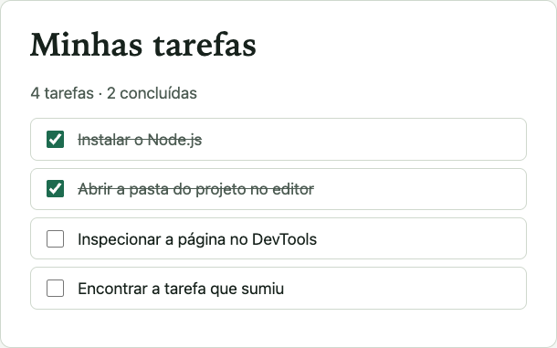
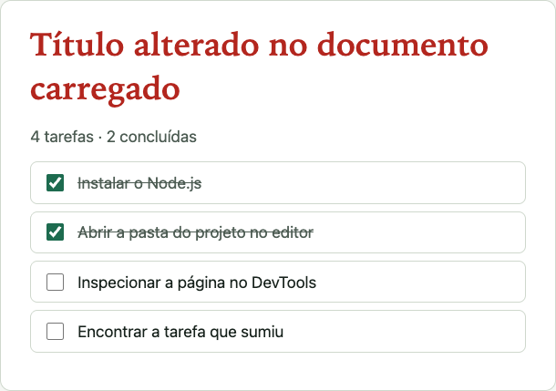

Abra a pasta, não um arquivo isolado
- Tempo
- 7 min
- Pré-requisitos
- VS Code (ou outro editor) instalado
- Resultado esperado
- Explorador lateral mostra
index.html,app.js,estilos.cssecorrigido/
- File › Open Folder… (Arquivo › Abrir pasta) →
02-erros-controlados. - Abra
app.jspelo explorador. - Abra o terminal integrado: Ctrl+`. Em que pasta ele começou?
CompareAbrir só app.js (arrastando o arquivo) mostra o explorador? O terminal começa na mesma pasta?

Confira a extensão Vue - Official; reconheça ESLint e Prettier
- Tempo
- 5 min
- Resultado esperado
- Extensões identificadas pelo nome e pelo publicador
- Painel Extensions: Ctrl+Shift+X (Cmd+Shift+X).
- Procure Vue - Official (antigo “Volar”). Instale se faltar.
- Localize ESLint e Prettier. Não configure nada ainda.
Temas e ícones são opcionais. Configurar ferramentas de projeto antes de existir projeto gera arquivos sem uso.

Elements: alterar o documento carregado não altera o arquivo

Versão corrigida (corrigido/index.html). Compare o título.

Título e cor alterados no documento carregado. Registro automatizado: a mudança foi feita por script no DOM, o mesmo efeito de editar no Elements.

Após recarregar: o navegador leu o arquivo de novo e a alteração sumiu.
- Abra o DevTools: F12 (Cmd+Option+I).
- Elements: dê duplo clique no texto do
<h1>e troque-o. - Styles: mude a cor do título.
- Recarregue. O que voltou? O arquivo mudou?

Console: ache o arquivo e a linha do erro
Failed to load resource: the server responded with a status of 404 (Not Found) estilo.css:1
Uncaught TypeError: Cannot set properties of null (setting 'textContent')
at atualizarResumo (http://localhost:8088/app.js:34:22)- Resultado esperado
- Arquivo, linha e coluna anotados; tradução da mensagem com suas palavras
- Aba Console. Leia a mensagem inteira antes de clicar.
- Clique em
app.js:34. Qual linha abre? - O que é
nullali? De onde ele veio?
Dica 1
“Cannot set properties of null”: o código tentou escrever numa variável que vale null.
Dica 2
Na linha anterior, querySelector devolve null quando não encontra o seletor. Procure o id no HTML.
Mostrar solução (após a tentativa)
O HTML tem id="contador"; o script procura #resumo. Corrija um dos lados (só um).

Breakpoint: pausar e observar o valor de i
Um breakpoint pausa a execução numa linha para inspecionar variáveis. Use-o no defeito que não gera mensagem: a tarefa que sumiu.
- Sources ›
app.js→ clique no número 27. - Recarregue. A execução para; veja
iem Scope. - Continue (F8) e anote
ia cada pausa.
pausa em app.js:27 → i = 0; lista.length = 4; (i < lista.length - 1) = true
pausa em app.js:27 → i = 1; lista.length = 4; (i < lista.length - 1) = true
pausa em app.js:27 → i = 2; lista.length = 4; (i < lista.length - 1) = true<ul id="lista"> contém 3 <li>:
<li> Instalar o Node.js
<li> Abrir a pasta do projeto no editor
<li> Inspecionar a página no DevToolsExpliquePor que não houve pausa com i = 3? Qual tarefa ficou de fora?

Network: o que foi pedido, o que voltou
GET http://localhost:8088/ → 200 OK · text/html; charset=utf-8
GET http://localhost:8088/estilo.css → 404 Not Found · text/plain; charset=utf-8
GET http://localhost:8088/app.js → 200 OK · text/javascript; charset=utf-8~/modulo-2/etapas/02-erros-controlados $ PORTA=8088 node ../ferramentas/servidor-local.mjs
Servindo ~/modulo-2/etapas/02-erros-controlados
Abra http://localhost:8088/ no navegador. Ctrl+C encerra o servidor.
200 GET /
404 GET /estilo.css
200 GET /app.js- Aba Network aberta; recarregue a página.
- Qual linha está em vermelho? Qual o status?
- Compare o nome pedido com o nome do arquivo na pasta.
PerguntaO servidor de desenvolvimento é o backend de negócio da aplicação?